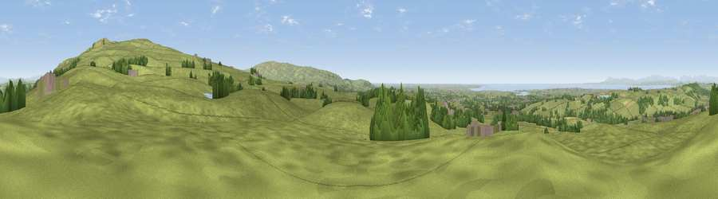

Viewpoint near Quernmore
#6461 in England · top 21% of its area beats it · near QuernmoreThe view, rendered

A 360° render of this exact spot computed from the terrain model, tree cover and land cover — summer colours, afternoon light, calibrated against photographs of famous viewpoints. Real trees, hedges and buildings will differ in detail.
The panorama
Grey silhouette: terrain skyline in each direction (720 bearings, Earth curvature and refraction included). Dashed green: skyline with trees (+15 m) and buildings (+8 m) as obstacles. Blue strip: how far the ground is visible on each bearing.
Where the view opens
Wedge length = distance to the farthest visible ground on that bearing (vegetation-aware). Rings at 10, 25 and 50 km.
What fills the view
89% grassland · 6% woodland · 3% water · 1% built-up · 1% cropland
Angular shares of the visible panorama (visual magnitude), not map area. Landscape diversity 0.21 (0–1 Shannon).
Key numbers
More beautiful places nearby
The staircase of upgrades: each row has a higher view potential than everything closer. Driving times are estimates from straight-line distance, calibrated against real road routing — check an actual route before setting out.
| Place | Direction | Drive | Score |
|---|---|---|---|
| Viewpoint near Quernmore | NE · 3 km | ~7 min | 78.0 |
| Viewpoint near Scorton | S · 9 km | ~18 min | 79.9 |
| Warton Crag | NNW · 15 km | ~27 min | 83.2 |
| Viewpoint near Grange-over-Sands | NNW · 24 km | ~40 min | 83.4 |
| Viewpoint near Cartmel | NW · 27 km | ~43 min | 87.0 |
| Viewpoint near Cartmel | NW · 27 km | ~44 min | 87.2 |
| Viewpoint near Finsthwaite | NNW · 34 km | ~51 min | 90.3 |
| The Knoll | S · 370 km | ~359 min | 91.0 |
54.01241, -2.73206 · source: screening · position refined by local search. Computed location — check access rights before visiting.